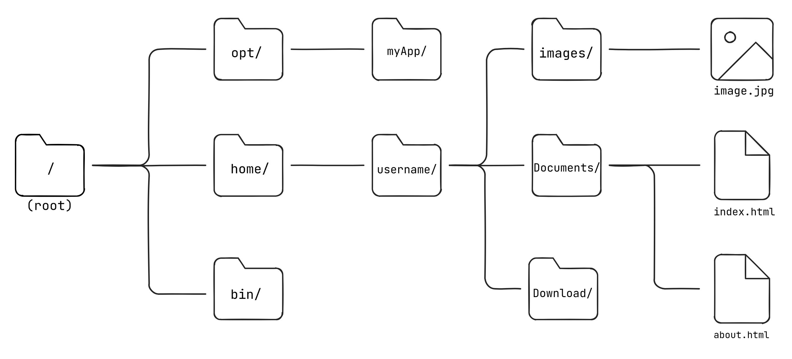
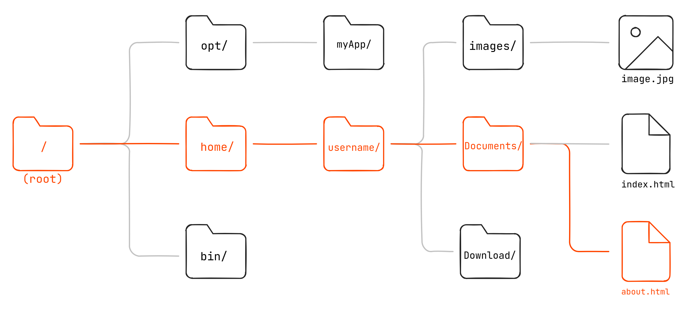

Introduction aux langages HTML et CSS
Un attribut est une paire nom-valeur associée à la balise ouvrante d’un élément. Le nom de l’attribut est séparé de la valeur par un signe « = ». La valeur est placée entre guillemets.
<balise attribut="valeur"></balise>
Un
Chaque élément ne peut pas avoir plus d’un attribut avec un nom donné.
Il existe des
Attributs utilisables avec tous les éléments HTML.
La balise <a> signifie
<a> requiert l’attribut
href
<a href="https://www.parisnanterre.fr/">université Paris Nanterre</a>
Il est possible de créer des liens
URL : Une URL est simplement l'adresse d'une
ressource donnée, unique sur le Web
MDN,
Comprendre les URL et leur structure
Lorsque l'on réalise un site web, et plus
particulièrement lorsque l'on met en place des
liens ou une navigation, il est important de
comprendre la distinction entre
Un
https://fr.wikipedia.org/wiki/Uniform_Resource_Locator
https
fr.wikipedia.org
wiki/Uniform_Resource_Locator
On peut aussi trouver un
Un
images/photo.jpg
Si l'on se trouve sur la page
https://www.exemple.com/articles/index.html, le lien relatif
../images/photo.jpg signifie "dans
le dossier parent (../) ; chercher
le répertoire images (images/) ;
puis le fichier photo.jpg".
À noter que ces chemins d'accès tirent leur origine des systèmes de fichiers hiérarchiques, systèmes popularisés par UNIX.
Un chemin absolu part toujours de la
(linux/macos) ou/
(Windows), C:, etc. D:
/home/user/documents/file.txt
C:\Users\John\Documents\file.txt
(ouhttp://www.mon-nom-de-domaine.fr
https://) https://www.example.com/images/photo.jpg
Un chemin relatif part du répertoire courant. Il est alors possible de descendre ou de remonter dans l'arborescence.
...
Chaque /
Quel est le chemin absolu vers le fichier about.html ?
Quel est le chemin absolu vers le fichier about.html ?
/home/username/Documents/about.html
Depuis about.html, quel est le chemin
relatif vers index.html ?
Depuis about.html quel est le chemin
relatif vers index.html ?
./index.html
Depuis index.html, quel est le chemin
relatif vers le fichier
image.jpg ?
Depuis index.html, quel est le chemin
relatif vers le fichier
image.jpg ?
../images/image.jpg
Les liens <a> permettent de
relier des pages entre elles. Pour autant,
lorsque l’on élabore un site web, il est parfois
nécessaire d’isoler un groupe de liens pour
élaborer la navigation du site. C’est le rôle de
la balise <nav>.